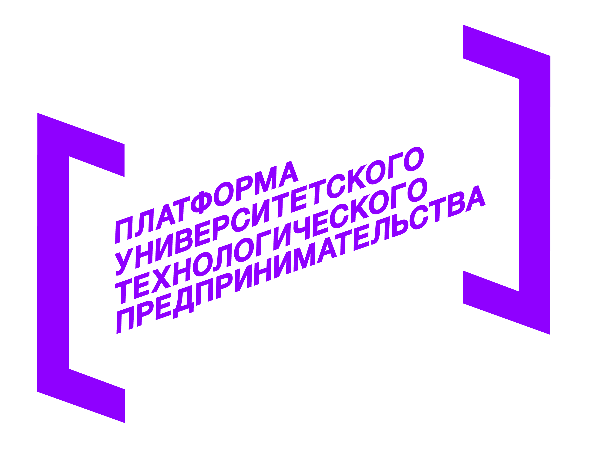
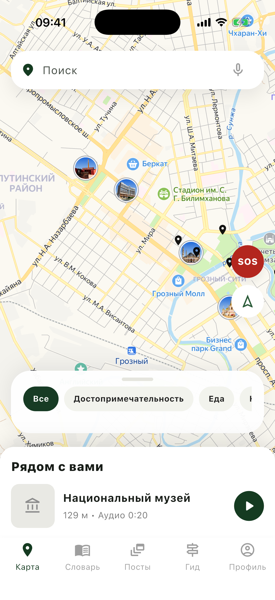
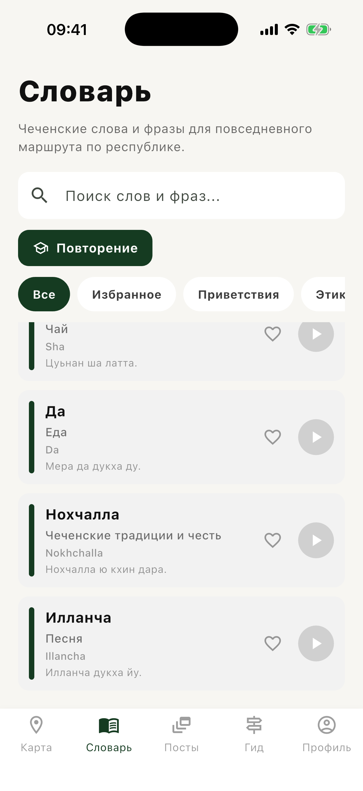
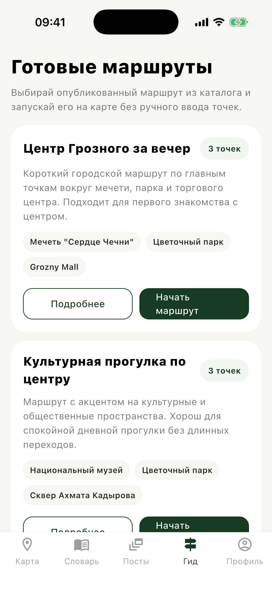
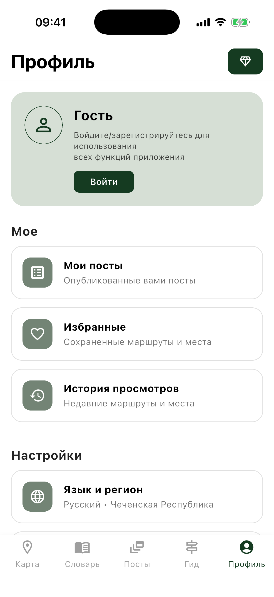

Уникальные маршруты
Продуманные пути от местных экспертов. Исследуйте скрытые жемчужины Чечни, которые не найдете в обычных путеводителях.
Ваш личный культурный и образовательный гид. Узнавайте историю, находите уникальные маршруты и погружайтесь в культуру без доступа к интернету.


Проект реализован при поддержке Фонда содействия инновациям в рамках программы «Студенческий стартап» мероприятия «Платформа университетского технологического предпринимательства» федерального проекта «Технологии».
Мы создали приложение, которое станет вашим незаменимым спутником в путешествии по республике.
Продуманные пути от местных экспертов. Исследуйте скрытые жемчужины Чечни, которые не найдете в обычных путеводителях.
Строгая модерация постов и отзывов. Мы заботимся о том, чтобы ваше путешествие и общение были максимально комфортными.
Работает везде, даже высоко в горах. Скачайте карты, маршруты и аудиогиды заранее и не зависьте от связи.
Современный, чистый дизайн, созданный для вашего удобства. Ничего лишнего.




В горах не всегда есть стабильная связь. С подпиской Premium вы можете заранее скачать маршрут, карты и аудиогид на свой телефон. Приложение использует GPS для определения вашего местоположения и автоматически включает нужный рассказ, когда вы приближаетесь к интересным локациям. Никаких прерываний, только чистые эмоции от путешествия.
Встроенный чеченско-русский словарь поможет вам найти общий язык с местными жителями и проявить уважение к культуре. Сохраняйте нужные фразы и используйте их в путешествии, даже когда нет интернета.
Читайте посты других путешественников, делитесь своими впечатлениями и находите компанию для прогулок. Наше сообщество безопасно благодаря строгой модерации — мы удаляем спам и токсичный контент, чтобы сохранить дружелюбную атмосферу.
Нашли потрясающее кафе с местной кухней недалеко от мечети! Обязательно попробуйте жижиг-галнаш.
Маршрут «Легенды гор» просто невероятный. Аудиогид очень интересный, спасибо разработчикам.
Мы собрали ответы на самые популярные вопросы о приложении Local Pulse
Да. Скачайте карты, маршруты и аудиогиды заранее в разделе «Офлайн-данные» — и пользуйтесь ими без связи.
Когда вы приближаетесь к месту, рассказ о нём включается автоматически. Автозапуск можно отключить в настройках.
Да. Каждый пост проходит проверку модераторами перед публикацией в общей ленте.
Пароли хранятся в виде необратимого хеша, данные — на серверах в РФ согласно 152-ФЗ. Геолокация используется только с вашего согласия.